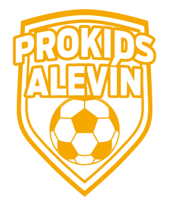

Liga ProKids es un programa formativo innovador que combina partidos organizados por edad y nivel con un sistema de progreso diseñado para maximizar la participación y el desarrollo de cada niño.
LOS DOMINGOS SON DE LA LIGA PROKIDS
¿QUÉ ES LA LIGA PROKIDS?
Nuestro objetivo es ofrecer los mejores aspectos del fútbol formativo (equilibrio, desafíos y diversión), dejando de lado las presiones que muchas veces acompañan a las ligas federadas.
- 40 min. de juego asegurados por jornada.
- Inscripción individual y flexible: juega cuando quieras.
- Partidos equilibrados por edad y nivel.
- Sin necesidad de tener equipo.

¿CÓMO FUNCIONA LA LIGA PROKIDS?
- Regístrate en la web.
- Crea la ficha del jugador.
- Compra tu próxima jornada (individual o pack) antes del jueves a las 23:59h.
- El viernes recibes la notificación de confirmación del horario del partido.
- El domingo llega al campo, recoge tu equipación y diviértete.
- Elige las jornadas en las que quieres participar. Si no puedes asistir, haciendo click en el botón "NO VOY" te guardaremos la inscripción para la próxima.
- Todos los jugadores suman puntos por actitud y rendimiento que pueden canjear por premios y revisar en su perfil de la web.
IMPORTANTE: si tienes dudas de cómo registrarte, envíanos un mensaje y estaremos encantados de ayudarte.
Las plazas son limitadas por categoría y posición.
Sin cuotas fijas, sin compromisos. Solo fútbol y diversión cada domingo.
PRECIO
14 € por jornada (sin compromiso fijo)
Aprovecha los descuentos por la compra de packs.
Packs disponibles:
- Pack 5 jornadas → 65 € (13 €/jornada)
- Pack 10 jornadas → 120 € (12 €/jornada)
UBICACIÓN
Polideportivo Juan Carlos I (Algorfa)
EDADES
De 4 a 14 años (Prebenjamín a Infantil)
HORARIO
Domingos por la mañana:
- 90 minutos de jornada (incluyendo calentamiento).
- 40 minutos de juego asegurado para cada uno.
LA LIGA PROKIDS ES PARA TI SI...
Tu hijo juega pocos minutos en su equipo y necesita más tiempo en el campo para demostrar su talento.
Crees que tu hijo podría alcanzar su máximo potencial si tuviera partidos adaptados a su nivel.
Es un apasionado del fútbol y quiere disfrutar cada semana.
No está federado, pero merece vivir partidos organizados, con retos adecuados a su nivel.
Buscas un entorno sin gritos ni presión, con enfoque en mejorar y disfrutar.
Quieres que compita con niños de su nivel, aprendiendo valores como el compañerismo y la actitud positiva.
Te gustaría que reciba premios, visibilidad y reconocimiento por su esfuerzo.
NO DEJES QUE TU HIJO PIERDA ESTA OPORTUNIDAD
INSCRÍBETE YA¿TIENES ALGUNA DUDA O NECESITAS AYUDA?
CONTACTA CON NOSOTROS
Si necesitas ayuda para inscribirte, contacta con nosotros y reservaremos tu plaza.
ENVIAR UN MENSAJEENTRA AL GRUPO DE WHATSAPP
Únete a nuestro grupo oficial de WhatsApp para estar al día de las novedades y recibir ayuda en tiempo real.
ÚNETE AL GRUPO¡ÚNETE A MÁS DE 500 FAMILIAS QUE YA HAN PARTICIPADO!

María G.
Madre de Alejandro, 9 añosMi hijo ha mejorado muchísimo desde que se unió a Liga ProKids. Le encanta el sistema de logros y está siempre motivado para el siguiente partido.

Carlos R.
Padre de Laura, 8 añosLa organización es excelente y los entrenadores son muy profesionales. Mi hija disfruta cada partido y ha hecho muchos amigos.

Ana M.
Madre de Daniel, 10 añosLiga ProKids ha sido una experiencia increíble para toda la familia. Los niños aprenden valores importantes mientras se divierten.
NUESTROS PATROCINADORES